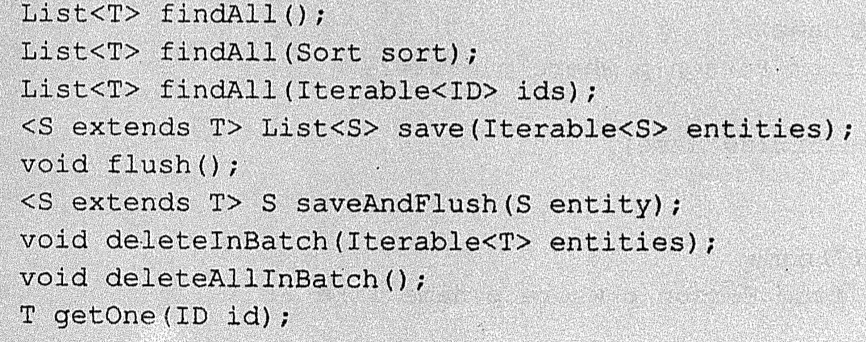
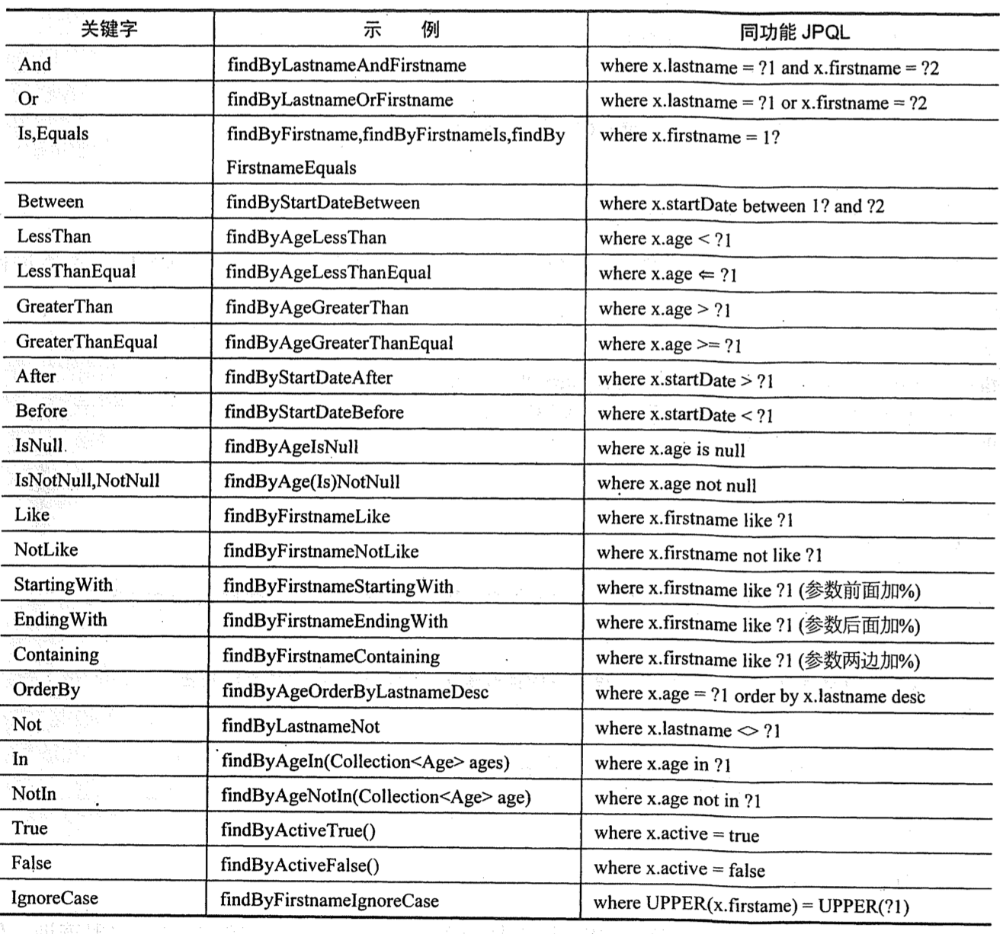

1. spring Data jpa hibernate 引领数据访问技术，使用 orm 对象关系映射来进行数据库访问，通过模型和数据库进行映射，通过操作对象实现对数据库操作，把数据库相关操作从代码中独立出来。随着 hibernate 盛行，hibernate 主导了 JPA 规范，即 java persistence api。jpa 是一个基于 orm 映射的标准，主要实现有 hibernate，eclipselinke，openjpa 等。springDataJPA 是 spirng data 的一个子项目，提供了基于 jpa 的 Repository 接口，极大减少了数据访问的代码开发。
spring boot 对 jpa 的自动配置，放在org.springframework.boot.autoconfigure.com.jpa下面，包含 hibernate 的自动配置，说明 spring 默认 jpa 的实现者是 hibernate。JpaProperties 里面，使用的配置是@ConfigurationProperties(prefix = “spring.jpa”)，所以在配置数据库连接属性时以这个为开头。在 JpaBaseConfiguration 里面，自动配置了 transactionManager,jpaVendorAdapter,enetityMappingFactory 等 bean，还包含一个 getPackagesToScan 方法，用于扫描所有@Entity 的 bean。对于使用 hibernate 时页面出现的会话连接关闭错误，也自动配置了 open session in view 过滤器 OpenEntityManagerInViewIntegerceptor,非常方便。
1.1. 配置数据库连接和 mvn 引入 引入 mvn 配置，以 mysql 为例，
1 2 3 4 5 6 7 8 9 10 <dependency > <groupId > org.springframework.boot</groupId > <artifactId > spring-boot-starter-data-jpa</artifactId > </dependency > <dependency > <groupId > mysql</groupId > <artifactId > mysql-connector-java</artifactId > <version > 5.1.21</version > </dependency >
通过 property 配置需要的数据库参数，如：
1 2 3 4 spring.datasource.url =jdbc:mysql://10.72 .218.15 :3306 /MerchantQrCode?characterEncoding=UTF8&socketTimeout=60000 spring.datasource.username =merchantqrcodespring.datasource.password =dp!@BJudIZgTAspring.datasource.driver-class-name =com.mysql.jdbc.Driver
1.2. 定义数据访问层 继承 JpaRepository 接口，如
1 public interface ShopTypeRepository extends JpaRepository <BcQrSceneShopType ,Integer >
继承接口后会自动注入，不需要加@configuration @bean 等进行配置，可以直接@Autowired 注入使用。继承 JpaRepository 接口，就已经默认可以使用下面一些基础方法：

1.3. 定制查询 spingdata jpa 支持通过定义在 repository 接口中的方法名来定义查询，例如 findByName（String name） 就会以 name 为列进行查询，findByNameLike 相当于 name like xxx ，其中 findBy 可以用 find，read，query，queryBy,get,getBy 来代替。各种定义规范实例如下表：

如果想限制数量，可以使用 findFirst10ByName 这种，如果要使用排序，可以使用 sort 对象，如 findByName(“xxx”,new Sort(Derection.ASC,”age”)),如果想使用分页，就用 PageRequest,如 findByName(“xx”,new PageRequest(0,10))。如果排序+分页，就在 PageRequest 里面再加个 sort 对象参数。
2. 接入 mybatis 2.1. 首先加入 mybatis 依赖 1 2 3 4 5 <dependency > <groupId > org.mybatis.spring.boot</groupId > <artifactId > mybatis-spring-boot-starter</artifactId > <version > 1.1.1</version > </dependency >
2.2. 然后编写 dao 注意加上@Mapper,使用起来和正常 mybatis 一样，然后在调用处直接注入即可。
1 2 3 4 5 6 7 8 9 10 @Mapper public interface QrcodeDAO @Select ("select count(1) from BC\_QR\_Scene" ) int findCount () @Select ("select ID,Name,SceneCode from BC\_QR\_Scene where ID = #{id}" ) QrCodeScene findById (@Param("id" ) int id) ; }